Tungt salær er et begrep som beskriver betydelige honorarer eller vederlag som utbetales for spesielle tjenester eller oppdrag, og som krever særskilt oppmerksomhet i regnskapsføring og skattemessig behandling. Dette er særlig relevant innenfor juridiske tjenester, konsulentarbeid og andre profesjonelle serviceytelser hvor kompensasjonen kan være vesentlig.
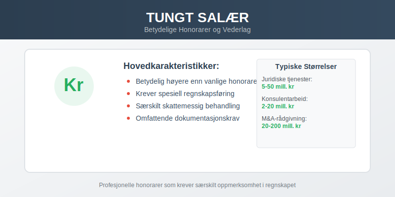
Begrepet “tungt salær” stammer fra det juridiske miljøet, men har utvidet seg til å omfatte alle former for betydelige honorarer og vederlag i næringsvirksomhet. Forståelse av dette konseptet er kritisk for korrekt regnskapsføring og skattemessig behandling.
Definisjon og Karakteristikker
Tungt salær karakteriseres av følgende egenskaper:
- Størrelse: Vesentlig høyere enn vanlige honorarer for tilsvarende tjenester
- Kompleksitet: Ofte knyttet til spesialiserte eller komplekse oppdrag
- Varighet: Kan være både engangshonorarer og langvarige avtaler
- Profil: Høy synlighet eller strategisk betydning for bedriften
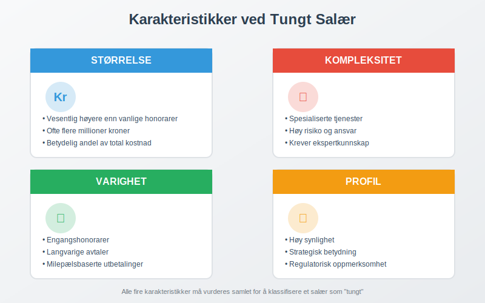
Typiske Eksempler på Tungt Salær
| Tjenestetype | Eksempel | Typisk størrelse |
|---|---|---|
| Juridiske tjenester | M&A-transaksjoner | 5-50 millioner kr |
| Konsulentarbeid | Strategiske omorganiseringer | 2-20 millioner kr |
| Tekniske tjenester | Systemimplementeringer | 10-100 millioner kr |
| Finansielle tjenester | IPO-prosesser | 20-200 millioner kr |
Regnskapsføring av Tungt Salær
Regnskapsføringen av tungt salær følger samme grunnprinsipper som annen periodisering, men krever særskilt oppmerksomhet på grunn av beløpsstørrelsen og kompleksiteten.
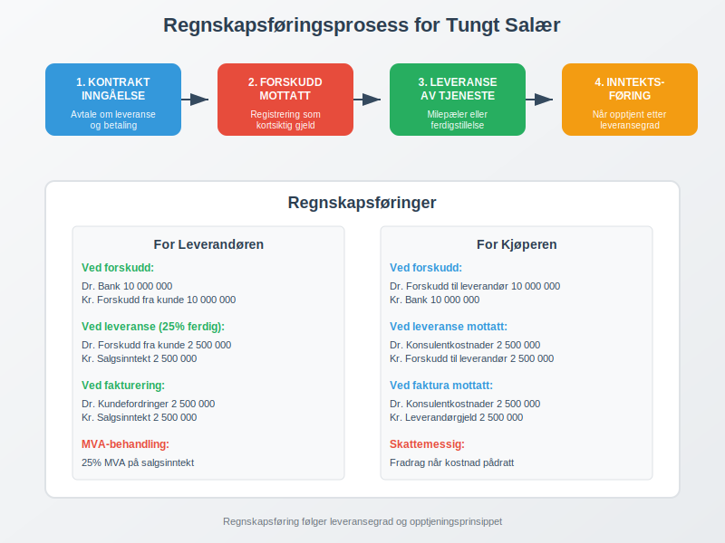
Grunnleggende Regnskapsføring
For leverandøren av tjenesten:
Dr. Kundefordringer X kr
Kr. Salgsinntekt X kr
For kjøperen av tjenesten:
Dr. Driftskostnad X kr
Kr. Leverandørgjeld X kr
Spesielle Hensyn
Forskuddsbetalinger og milepælsbetalinger er vanlige ved tungt salær og krever spesiell behandling:
- Forskudd fra kunde registreres som kortsiktig gjeld
- Gradvis inntektsføring etter leveranse
- Dokumentasjon av leveransemilestoner
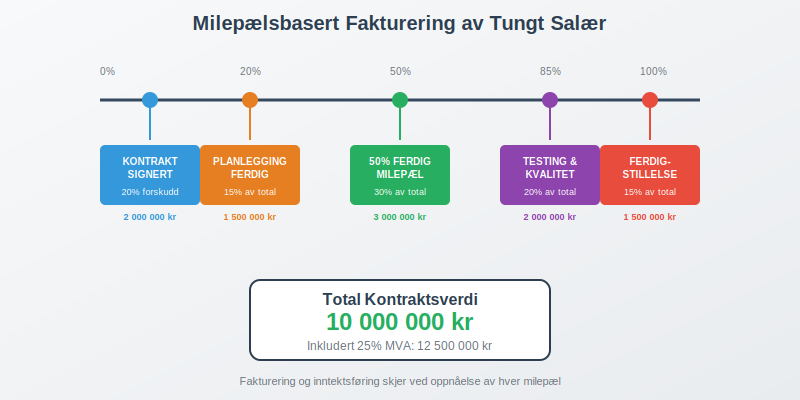
Skattemessig Behandling
Skattemessig behandling av tungt salær følger standard prinsipper for næringsinntekt, men med særlige vurderinger rundt timing og fradragsrett.
For Leverandøren
- Inntektsføring: Når tjenesten er levert (opptjent)
- MVA-behandling: 25% MVA på profesjonelle tjenester
- Forskuddsskatt: Økt oppmerksomhet på forskuddsbetalinger
For Kjøperen
- Fradragsrett: Fullt fradrag når kostnad er pådratt
- Kapitalisering: Vurder om kostnaden skal aktiveres
- Dokumentasjon: Styrket krav til dokumentasjon
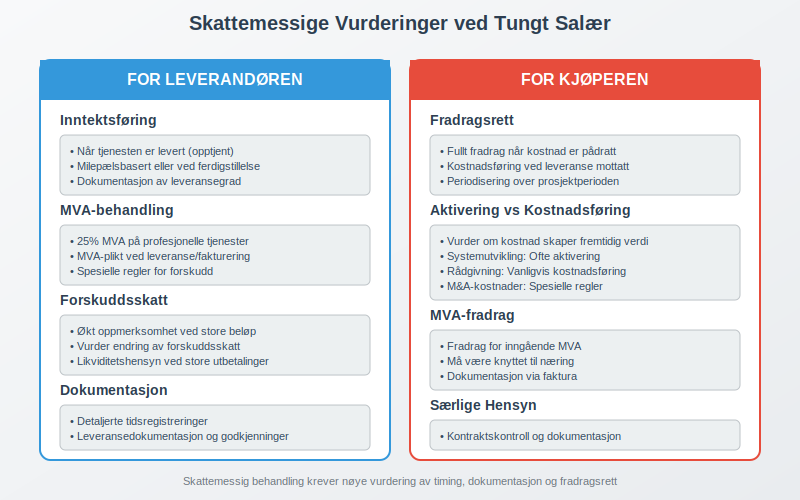
Juridiske Aspekter og Avtaleforhold
Tungt salær involverer ofte komplekse avtaleforhold som krever juridisk ekspertise og nøye dokumentasjon.
Kontraktsutforming
Viktige kontraktselementer:
- Tydelig definisjon av leveranser
- Milepæler og betalingsbetingelser
- Ansvarsbegrensninger
- Tvistløsningsmekanismer
Regulatoriske Krav
Enkelte bransjer har spesifikke reguleringer for høye honorarer:
- Advokatbransjen: Retningslinjer for rimelige salærer
- Revisjonsbransjen: Uavhengighetskrav ved høye honorarer
- Konsulentbransjen: Offentlige anskaffelsesregler
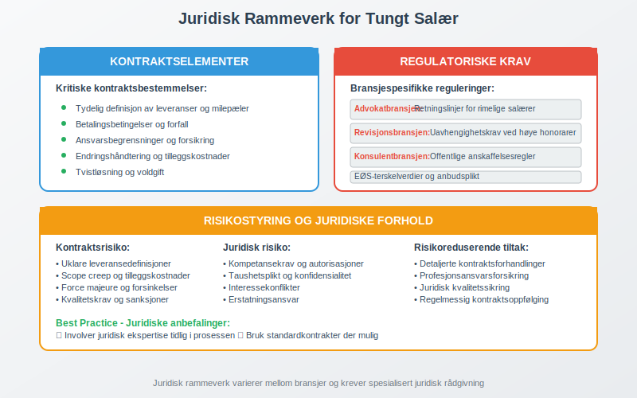
Internkontroll og Risikostyring
Ved håndtering av tungt salær er det kritisk med robust internkontroll for å sikre korrekt behandling.
Kontrollaktiviteter
Godkjenningsprosesser:
- Styregodkjenning for betydelige engasjementer
- Skriftlige fullmakter og budsjettgodkjenninger
- Regelmessig oppfølging av kostnadsutvikling
Dokumentasjon:
- Detaljerte tidsregistreringer
- Omfattende prosjektrapportering
- Ekstern verifikasjon av leveranser
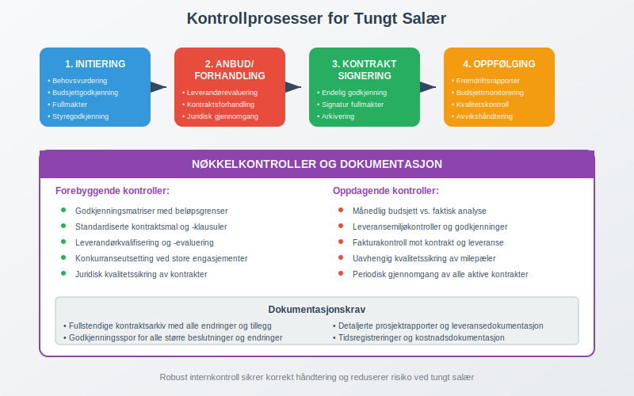
Risikoområder
| Risikoområde | Beskrivelse | Kontrolltiltak |
|---|---|---|
| Kostnadsoverskridelser | Uforutsette ekstrakostnader | Fastprisavtaler og budsjettoppfølging |
| Kvalitetsrisiko | Manglende leveransekvalitet | Milepælskontroller og godkjenningsprosesser |
| Juridisk risiko | Kontraktsbrudd eller tvister | Grundig juridisk gjennomgang |
| Regnskapsrisiko | Feil periodisering | Månedlig regnskapsavstemminger |
Bransjespesifikke Særegenheter
Ulike bransjer har distinkte tilnærminger til tungt salær basert på bransjepraksis og regulatoriske krav.
Teknologisektoren
- Implementeringsprosjekter: Lange tidsrammer og fasedeling
- Lisensiering: Kombinasjon av engangsbeløp og løpende royalties
- Support og vedlikehold: Langvarige serviceavtaler
Finanssektoren
- M&A-rådgivning: Suksessbaserte honorarer
- Kapitalmarkedstransaksjoner: Kombinerte retainer- og suksesshonorar
- Compliance-tjenester: Løpende rådgivningsavtaler
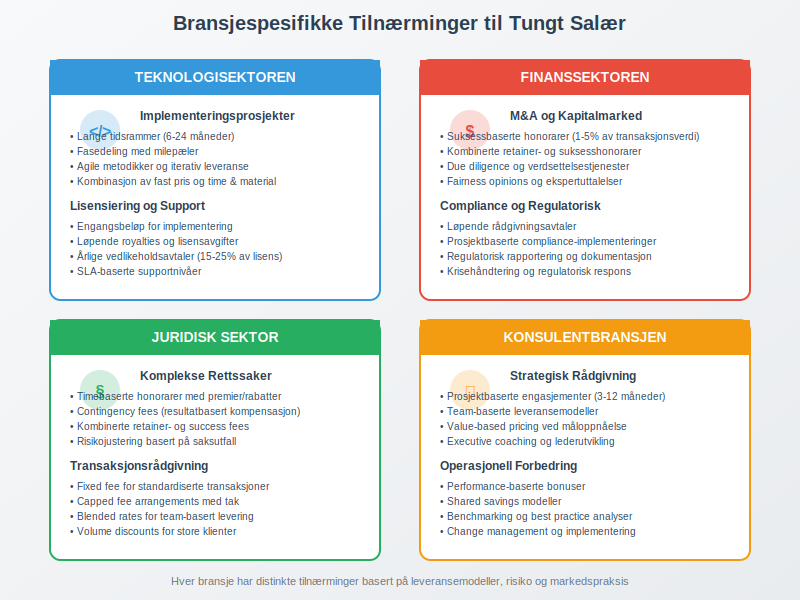
Digitalisering og Fremtidens Tungt Salær
Digitaliseringen endrer hvordan tungt salær håndteres og dokumenteres, med nye muligheter for effektivitet og kontroll.
Teknologiske Løsninger
Prosjektstyringsverktøy:
- Integrert tidsregistrering og fakturering
- Sanntids budsjettoppfølging
- Automatiserte rapporteringsfunksjoner
Kunstig intelligens:
- Prediktiv analyse av prosjektkostnader
- Automatisert kontraktsanalyse
- Risikovurdering basert på historiske data
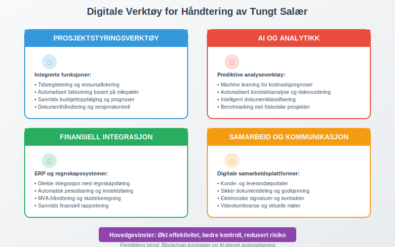
Fremtidige Trender
- Blockchain-baserte kontrakter: Automatiserte betalingsmekanismer
- AI-drevet risikostyring: Prediktive modeller for kostnadskontroll
- Integrerte regnskapsplattformer: Sanntids regnskapsføring og rapportering
Internasjonale Perspektiver
Ved internasjonale engasjementer med tungt salær oppstår ytterligere kompleksitet rundt transfer pricing og skattemessig behandling.
Transfer Pricing-vurderinger
Armlengdeprinsippet:
- Sammenligning med tilsvarende transaksjoner
- Dokumentasjon av prisfastsettelse
- Konsistens på tvers av jurisdiksjoner
Skatteavtaler og Dobbeltbeskatning
- Permanent establishment: Vurdering av skatteposisjon
- Kildeskatt: Behandling av grenseoverskridende betalinger
- Forhåndsavklaringer: Sikkerhet rundt skattemessig behandling
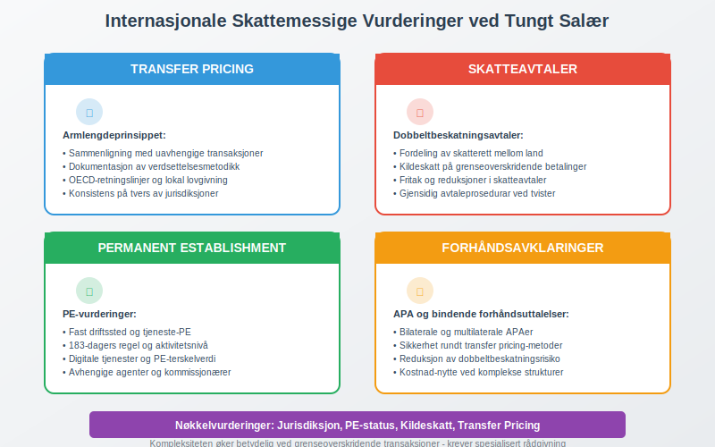
Best Practice og Anbefalinger
For optimal håndtering av tungt salær anbefales følgende tilnærming:
Planleggingsfasen
- Grundig kontraktsutforming med tydelige leveransemilestoner
- Skattemessig planlegging for optimalisering av fradrag
- Risikovurdering og etablering av kontrollrutiner
Gjennomføringsfasen
- Løpende oppfølging av kostnader og leveranser
- Regelmessig rapportering til relevante interessenter
- Proaktiv risikostyring ved avvik fra planer
Avslutningsfasen
- Fullstendig dokumentasjon av alle leveranser og kostnader
- Endelig regnskapsføring og skattemessig avklaring
- Læringspunkter for fremtidige engasjementer
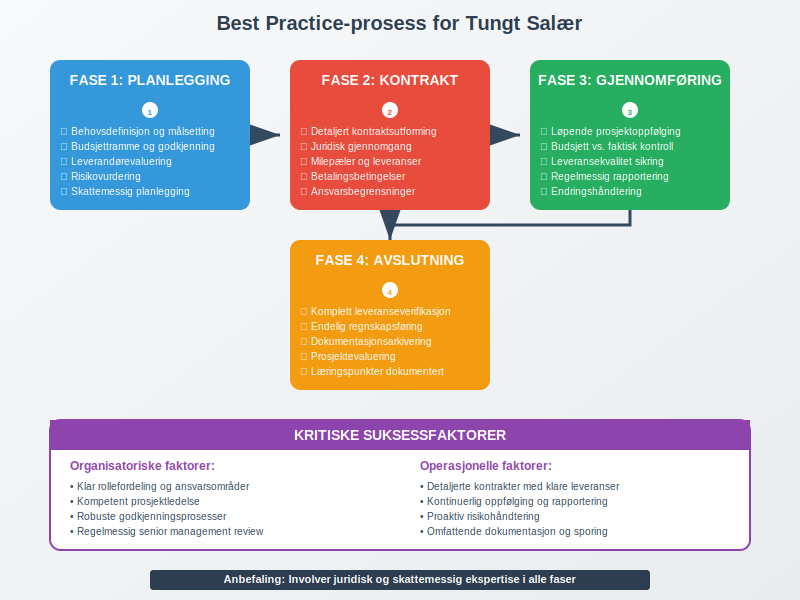
Konklusjon
Tungt salær representerer en betydelig kategori av forretningsutgifter som krever spesiell oppmerksomhet på grunn av størrelse, kompleksitet og potensielle risikoer. Korrekt håndtering involverer:
- Grundig planlegging av kontrakts- og regnskapsmessige aspekter
- Robust internkontroll for å sikre korrekt behandling
- Kontinuerlig oppfølging av kostnader og leveranser
- Professjonell rådgivning ved komplekse engasjementer
Ved å følge anerkjente best practices og opprettholde høy dokumentasjonskvalitet kan organisasjoner håndtere tungt salær på en måte som både optimaliserer forretningsverdi og sikrer regulatorisk compliance.
For ytterligere veiledning om relaterte emner, se våre artikler om personalkostnad, attestering og internkontroll.